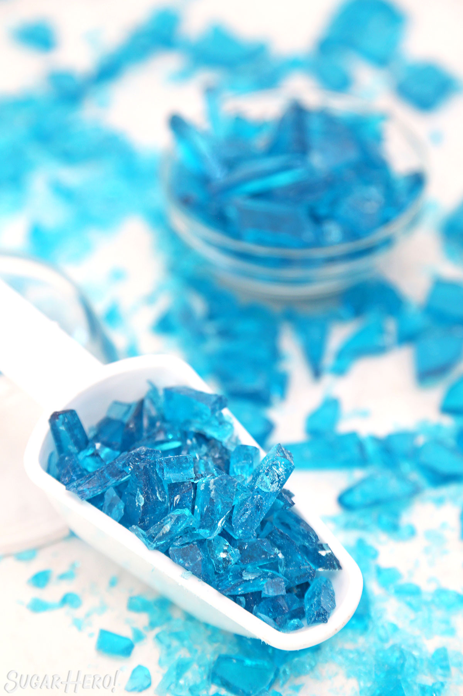

Tacoes

Description
:)
Ingredients
- Corn syrup
- Granulated sugar
- Clear flavoring extract
- Blue gel food coloring
- Candy thermometer
Recipe
- Combine water, light corn syrup, and granulated sugar in a medium saucepan over medium-high heat.Stir until the sugar is moistened and dissolves.
- Brush down the sides of the pan with a wet pastry brush – this will remove any stray sugar crystals. Sugar crystals in the pan can cause your whole batch to crystallize. Once it comes to a boil, insert a candy thermometer. From this point on, do not stir the candy.
- Cook the candy until it reaches 290 F on the thermometer. It should be a light yellowish color.Immediately remove the pan from the heat. Let it sit for a minute, until the rapid bubbling stops, then add flavoring extract and blue gel food coloring. Stir well until the color is evenly distributed.
- Pour the hot candy out onto a baking sheet covered with foil. You can spread it into a thinner layer with the spatula if you would like. Let the candy cool completely at room temperature, until it is set and hard.Use a knife or kitchen mallet to smash it up into smaller pieces.